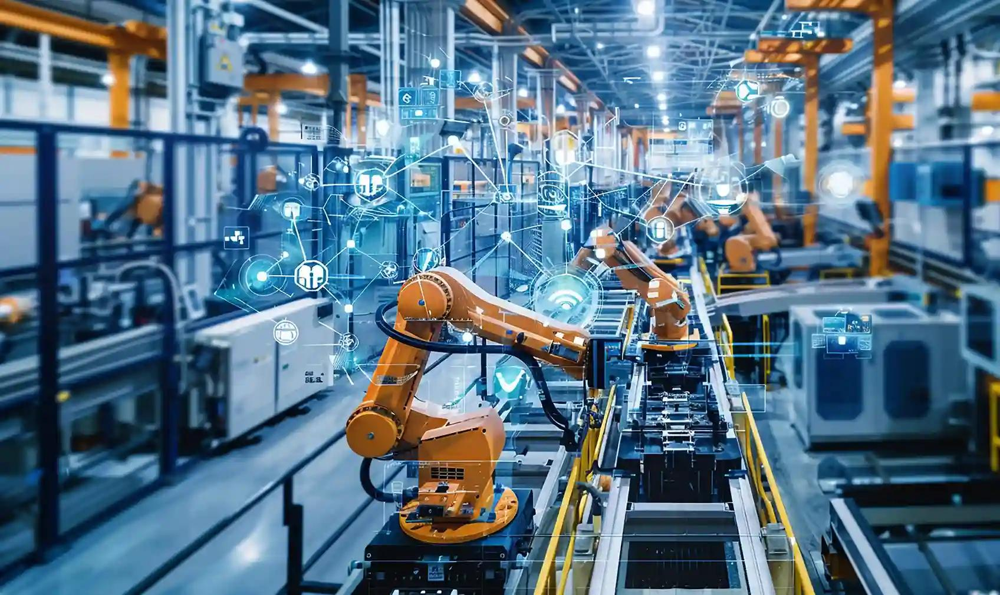

A Indústria 4.0, também conhecida como Quarta Revolução Industrial, representa a modernização das indústrias por meio da utilização de tecnologias digitais, automação, inteligência artificial e comunicação entre máquinas. Seu principal objetivo é tornar os processos industriais mais inteligentes, produtivos, eficientes e conectados. Na Indústria 4.0, máquinas, sensores, computadores e sistemas de controle conseguem trocar informações em tempo real, permitindo acompanhar a produção e identificar possíveis problemas. Exemplo prático: uma fábrica utiliza sensores para monitorar a temperatura de um motor. Quando a temperatura começa a subir além do normal, o sistema identifica a situação e envia um alerta para a equipe de manutenção. Como surgiu a Indústria 4.0? A indústria passou por quatro grandes transformações ao longo da história.

1ª Revolução Industrial (século XVIII) Surgimento das máquinas a vapor e mecanização da produção, reduzindo a dependência do trabalho manual. 2ª Revolução Industrial (século XIX)
Utilização da eletricidade e desenvolvimento das linhas de montagem, permitindo a produção em massa.
2ª Revolução Industrial (século XIX)
Utilização da eletricidade e desenvolvimento das linhas de montagem, permitindo a produção em massa.
 3ª Revolução Industrial (século XX)
Introdução de computadores, eletrônica, controladores programáveis e sistemas automatizados.
3ª Revolução Industrial (século XX)
Introdução de computadores, eletrônica, controladores programáveis e sistemas automatizados.
 4ª Revolução Industrial (século XXI)
Integração de inteligência artificial, sensores inteligentes, internet industrial e análise de dados.
4ª Revolução Industrial (século XXI)
Integração de inteligência artificial, sensores inteligentes, internet industrial e análise de dados.

A Internet Industrial das Coisas permite conectar máquinas, sensores e equipamentos à rede para coletar e compartilhar informações.
Exemplo: sensores instalados em máquinas enviam dados sobre temperatura, vibração e consumo de energia para um sistema de monitoramento.
A inteligência artificial permite que sistemas analisem grandes quantidades de informações, identifiquem padrões e auxiliem na tomada de decisões.
Exemplo: um sistema de IA analisa dados de vibração de motores para identificar sinais de possíveis falhas.

Os robôs industriais são utilizados para executar atividades repetitivas, movimentar materiais e realizar operações que exigem precisão.
Exemplo: braços robóticos utilizados para montar componentes de veículos.

Big Data está relacionado ao processamento e à análise de grandes volumes de dados.
Na indústria, essas informações podem ser utilizadas para acompanhar a produtividade, reduzir desperdícios e melhorar o funcionamento das máquinas.
Exemplo: uma fábrica analisa os dados de produção de vários meses para descobrir quais equipamentos apresentam mais paradas.